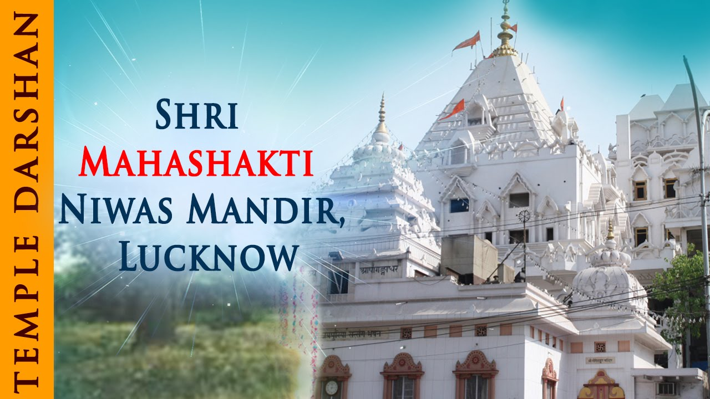
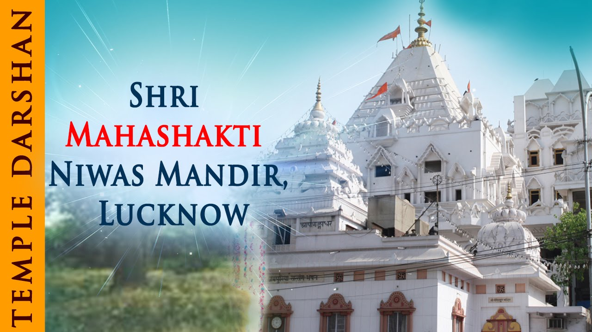
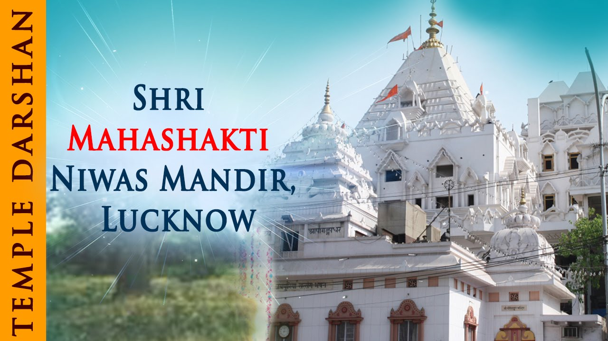

उत्तर प्रदेश भारत के उत्तरी हिस्से में स्थित सबसे बड़े राज्यों में से एक है। जनसंख्या के मामले में, उत्तर प्रदेश देश के सबसे अधिक आबादी वाले राज्यों में से एक है और क्षेत्रफल की बात करें तो यह चौथा सबसे बड़ा राज्य है। उत्तर प्रदेश (यूपी) पहले संयुक्त प्रांतों के रूप में नामित एक राज्य है जो भारत के उत्तर-मध्य गंगा के मैदानों में स्थित एक राज्य है।
उत्तर प्रदेश भारतीय लोकतंत्र में हमेशा एक उच्च राजनीतिक महत्व रखता है क्योंकि यह भारतीय आबादी के सबसे बड़े हिस्से का घर है और यह गतिशील सामाजिक जनसांख्यिकीय भी चित्रित करता है। उत्तर प्रदेश 1937 में, ब्रिटिश शासन द्वारा ब्रिटिश शासन द्वारा बनाया गया था और आजादी के बाद इसे 1 9 50 में उत्तर प्रदेश के रूप में बदल दिया गया था। लखनऊ जिला यूपी की राजधानी के रूप में कार्य करता है। उत्तर प्रदेश में कुल 18 डिवीजन और 75 ज़िले इस राज्य का गठन करते हैं। कृषि राज्य की अर्थव्यवस्था में प्राथमिक योगदानकर्ता है और इसे भारत के “चावल के कटोरे” के रूप में भी जाना जाता है।
उत्तर प्रदेश राज्य भारत की राजनीतिक व्यवस्था में महत्वपूर्ण भूमिका निभाता है। संख्या में लोकसभा निर्वाचन क्षेत्रों (भारत के निचला सदन) में, यूपी में 80 लोकसभा सीटें हैं, जो इसको भारत का सबसे ज्यादा लोकसभा सीट वाला राज्य है। उत्तर प्रदेश के उत्तर- पूर्व में उत्तराखंड राज्य और उत्तर में नेपाल देश, पूर्व में बिहार राज्य, दक्षिण पूर्व में झारखंड और छत्तीसगढ़ राज्य, दक्षिण में मध्यप्रदेश राज्य तथा पश्चिम में राजस्थान, दिल्ली और हरियाणा राज्य इसकी सीमा से लगे हुए हैं।
कुल क्षेत्रफल: 240,928 वर्ग किलोमीटर
जनसंख्या: 199,812,341
जनसंख्या घनत्व: 830/km2 (2,100/sq mi)
आधिकारिक भाषा: हिंदी, उर्दू।
26 जनवरी, 1950 को, जब भारत गणतंत्र बन गया,उस समय राज्य को वर्तमान नाम, उत्तर प्रदेश (शाब्दिक रूप से, उत्तरी राज्य “) दिया गया। इसकी राजधानी लखनऊ है,जो राज्य के पश्चिमी-मध्य भाग में अवस्थित है। राज्य 243,290 वर्ग किलोमीटर के साथ देश में चौथा सबसे बड़ा राज्य है। यह देश के उत्तर-मध्य भाग में स्थित है।यह राज्य भारत की आजादी के समय संयुक्त प्रांतों के रूप में बनाया गया था।
बाद में, संयुक्त प्रांतों का नाम 1950 में उत्तर प्रदेश में रखा गया। वाराणसी, लखनऊ, गाजियाबाद, बरेली, कानपुर,आगरा,प्रयागराज, अलीगढ़ और मोरादाबाद इत्यादि उत्तर प्रदेश के प्रसिद्ध शहर हैं।
Home

Uttar Pradesh also known as Northern Province is one of the most fascinating states of India. This state was established during the British reign in India and later named Uttar Pradesh after the nation became republic in the year 1950. This fourth largest state in India is divided into 18 divisions and is having 75 districts. Ganga, Yamuna, Gomti, Ghaghara, Gandak, Chambal, Betwa, Ken are the important rivers that flow and nourish the flora, fauna, and large population of the entire state. Hindu and Urdu are the official languages of the people of this state. There are many roadways, railways, and airports situated in different regions and this entails about the developed transportation system in the state. Uttar Pradesh shares its boundaries with eight other states of India from different directions. It is the state that is regarded for its rich culture and tradition in the different parts of India and the world.
(Uttar Pradesh- The Fourth Largest State In India)
Can you guess the name of the state of India that has its major contribution to Indian politics? It is the region where more than 50% of the population is involved in agriculture or we can say the place celebrating the festival latthmar Holi that has attained worldwide fame. We are talking about the most fascinating state that is stated as the largest state of north India and fourth-largest in the nation named ‘Uttar Pradesh’. This Indian state lying in the northern part of India is 243,286 square km in area. The Uttar Pradesh state has its major regions lying in the lap of Gangetic plains. This plain has been formed as the result of the deposition of silt and alluvium by the River Ganga while transcending down from the Himalayas. Uttar Pradesh state is fed by several rivers that have their inception point in the Himalayas lying in the north and the Vindhya Range lying in the south. The economy of this state mainly depends upon agriculture that is the major occupation of the people residing in this state.
Uttar Pradesh(State) Reviews
Varanasi
संसार के प्राचीनतम शहरों में से एक वाराणसी भारत के हिंदूओं का एक प्रमुख धार्मिक केंद्र है, उत्तर प्रदेश में बसने वाला यह शहर काशी के नाम से भी जाना जाता है। हिंदू धर्म के अलावा जैन तथा बौद्ध धर्म के अनुयायियों के लिए भी यह एक पवित्र स्थल है। गंगा नदी के किनारे बसी इस नगरी पर गंगा संस्कृति तथा काशी विश्वनाथ मंदिर का भी रंग चढ़ा हुआ दिखता है। ये शहर सैकड़ो वर्षों से भारतीय संस्कृति को संजो कर उत्तर भारत का प्रमुख धार्मिक एवं सांस्कृतिक केंद्र बना हुआ है।
वाराणसी की स्थिति
गंगा नदी के किनारे बसा यह शहर, उत्तर प्रदेश राज्य के दक्षिण-पूर्व में 200 मील (320 किलोमीटर) के क्षेत्रफल में फैला हुआ है। यह शहर उत्तर प्रदेश की राजधानी लखनऊ से 320 किलोमीटर तथा भारत की राजधानी से लगभग 900 किलोमीटर की दूरी पर स्थित है।
वाराणसी कॉरिडोर
13 दिसम्बर साल 2021 को पीएम मोदी ने वाराणसी में वाराणसी कॉरिडोर का उद्घाटन किया जिसने काशी की सुंदरता तथा प्रसिद्धि में चार चाँद लगा दिए। पीएम ने इस कॉरिडोर की नीव 8 मार्च साल 2019 में यहाँ की
सांस्कृतिक धरोहरों को संरक्षित रखने तथा भक्तों को उचित सुविधा प्रदान करने दृष्टि से रखा था। इस परियोजना में लगभग 700 करोड़ रुपये का खर्च आया है। वैसै तो अपने धार्मिक महत्व के कारण वाराणसी हमेशा वैश्विक पटल पर चर्चा में रहता है, मगर काशी विश्वनाथ कॉरिडोर नें काशी को तमाम चर्चाओं के केंद्र में लाकर खड़ा कर दिया था। इस कॉरिडोर के माध्यम से प्रधानमंत्री नरेंद्र मोदी नें बाबा काशी विश्वनाथ कें मंदिर परिसर को एकभव्य रूप प्रदान किया है, 30000 वर्ग फुट के क्षेत्रपल में फैले बाबा विश्वनाथ के प्रागंण को मोदी जी ने 5 लाख वर्ग फुट के प्रांगण का तोहफा दे दिया है। इस कॉरिडोर क द्वारा माँ गंगा को सीधे बाबा विश्वनाथ से जोड़ दिया गया है।
निष्कर्ष
वाराणसी एक प्राचीन पवित्र शहर है माँ गंगा जिसका अभिषेक करती है, यह भारत के प्राचीन धार्मिक केंद्रों में से एक है, भगवान शिव के 12 ज्योतिर्लिंगों में से एक काशी में भी विराजमान है। मंदिरों के शहर के नाम से प्रसिद्ध बाबा विश्वनाथ का यह धाम जैन तथा बौद्ध धर्म का भी प्रमुख केंद्र है। पूरे विश्व में अपनी एक अलग पहचान बनाने वाला यह शहर भारत के प्रमुख पर्यटन केंद्रों में से भी एक है। वाराणसी अपनी रेशमी कारोबार के लिए भी दुनिया में जाना जाने वाला एक प्रसिद्ध शहर है।
काशी हिंदू धर्म के 7 पवित्र शहरो में से एक है, वाराणसी मूल रूप से घाटों मंदिरों तथा संगीत के लिए जाना जाता है। काशी का एक नाम वाराणसी भी है जो यहां की दो नदियों वरुणा तथा असी के नाम पर है, ये नदियां क्रमशः उत्तर एवं दक्षिण से आकर गंगा नदी में मिलती है। ऋग्वेद में इस शहर को काशी के नाम से संबोधित किया गया है।
वाराणसी के अन्य नाम
इस ऐतिहासिक धार्मिक नगरी को वाराणसी तथा काशी के अलावा अन्य नामों से भी जाना जाता है जिसमें से कुछ निम्नलिखित है-
मंदिरो को शहर
भारत की धार्मिक राजधानी
भगवान शिव की नगरी
दीपों का शहर
ज्ञान की नगरी
विमितका
आनंदकाना
महासासाना
सुरंधन
वाराणसी की मशहूर चीजे
दोस्तों अगर आप बनारस घुमने गए और वहाँ शॉपिंग नहीं की, वहां के फूड नहीं खाए तो यकिन मानिए आपकी यात्रा अधूरी रह गई। बनारस जितना अपने धार्मिक महत्व के लिए प्रसिद्ध है उतना ही प्रसिद्ध वह अपने मार्केट में बिकने वाली चीजों के लिए भी है। बनारस के बाजारों के कुछ विश्व प्रसिद्ध चीजों को हम नीचे सुची बद्ध कर रहे है आप जब कभी भी वाराणसी जाइएगा इनको लेना और चखना न भूलिएगा।
बनारसी रेशमी साड़ी
ब्रोक्रेड
बनारसी पान
मलाई पूड़ी
बनारसी ठंडई
चाय
नायाब लस्सी
कचौड़ी और जलेबी
मलाई मिठाई
बाटी चोखा आदि
वाराणसी का इतिहास
हिंदू पौराणिक कथाओं के अनुसार भगवान शंकर ने काशी नगरी कि स्थापना आज से लगभग 5000 वर्ष पूर्व
वाराणसी के प्रमुख मंदिर
काशी या वाराणसी एक ऐसा धार्मिक शहर है जिसे मंदिरों के नगर के नाम से भी जाना जाता है, यहां लगभग हर गली के चौराहे पर एक मंदिर तो मिल ही जाता है। यहां लगभग कुल छोटे बड़े मंदिरों को मिलाकर 2300 के आस पास मंदिर स्थित है। इनमें से कुछ प्रमुख मंदिर निम्लिखित है-
1) काशी विश्वनाथ मंदिर
इसे स्वर्ण मंदिर के नाम से भी जाना जाता है, इसके वर्तमान स्वरूप का निर्माण अहिल्या बाई होल्कर द्वारा 1780 में करवाया गया था। भगवान शिव के 12 ज्योतिर्लिंगों में से एक इसी मंदिर में विराजमान है।
2) दुर्गा माता मंदिर
इस मंदिर के आस पास बंदरों की अधिक उपस्थिति के कारण इसे मंकी टेम्पल के नाम से भी जाना जाता है, इस मंदिर का निर्माण 18 वीं सदी के आसपास का माना जाता है। वर्तमान में ऐसी मान्याता है कि माँ दुर्गा इस मंदिर में स्वयं से प्रकट हुई थी। इस मंदिर का निर्माण नागर शैली में हुआ था।
3) संकट मोचन मदिर
प्रभु श्री राम के भक्त हनुमान को समर्पित यह मंदिर स्थानीय लोगों में बहुत ही लोकप्रिय है, यहां अनेक प्रकार के धार्मिक तथा संस्कृतिक कार्यक्रमों का आयोजन वार्षिक रूप में किया जाता है। 7 मार्च 2006 को इसी मंदिर परिसर में आतंकवादियों द्वारा तीन विस्फोट किया गया था।
4) व्यास मंदिर
रामनगर में स्थित इस मंदिर के पीछे एक दंत कथा है। एक बार व्यास जी को इस नगर में घुमते घुमते काफी समय हो गया मगर उनको कहीं भी किसी भी प्रकार का दान दक्षिणा नहीं मिला, इस बात से कृद्ध ब्यास जी पूरे नगर को श्राप देने जा रहे थे, तभी भगवान शिव तथा पार्वती माता ने एक दम्पत्ति के वेष में आकर उनको खुब दान दिया तब ब्यास जी श्राप की बात भुल गए। इसके बाद भगवान शिव ने ब्यास जी का इस नहरी में प्रवेश वर्जित कर दिया, इस बात के समाधान के लिए ब्यास जी ने गंगा के दूसरी ओर वास किया जहां रामनगर में अभी भी उनका मंदिर है।
5) मणि मंदिर
करपात्री महाराज की तपोस्थली धर्मसंघ परिसर में स्थित मणि मंदिर 28 फरवरी 1940 को श्रद्धालुओं को समर्पित किया गया था। शैव तथा वैष्णव की एकता का प्रतीक यह मंदिर सभी धर्मों के लोगों के लिए खुला रहता है। इस मंदिर की सबसे खास बात यह कि यहां 151 नर्मदेश्वर शिवलिंगों की कतार है।
काशी विश्नाथ मंदिर का इतिहास
भारत देश के उत्तर प्रदेश राज्य के वाराणसी शहर में स्थित बाबा भोलेनाथ का यह भव्य मंदिर हिंदू धर्म के अति प्राचीन मंदिरों में एक है। गंगा नदी के पश्चिमी घाट पर बसे इस नगर को हिंदू धर्म के लोग मोक्ष का द्वार मानते हैं। ऐसा माना जाता है कि यह स्थान भगवान शिव तथा आदि शक्ति माता पार्वती का आदि स्थान है।
इस मंदिर का राजा हरिश्चंद्र ने 11 वीं सदी में जिर्णोद्धार करवाया था उसके बाद मुहम्मद गोरी ने इसे सन 1194 में तुड़वा दिया था। इसके बाद इसे एक बार फिर बनवाया गया मगर पुनः जौनपुर के सुल्तान महमुद शाह ने इसे 1447 में तुड़वा दिया। फिर पंडित नारायण भट्ट ने इसे टोडरमल की सहायता से साल 1585 में बनवाया, फिर शाहजहां ने इसे 1632 में तुड़वाने के लिए सेना भेज दी मगर हिंदूओं के कड़े प्रतिरोध के कारण वो इस कार्य में सफल नहीं हो पाया। इसके उपरान्त औरंगजेब ने 18 अप्रैल 1669 में ब्राह्मणों को मुसलमान बनाने तथा मंदिर को तुड़वाने का आदेश जारी कर दिया। इसके बाद के समय में मंदिर पर ईस्ट इंडिया कम्पनी का अधिकार हो गया, तब कंम्पनी ने मंदिर के निर्माण कार्य को रोक दिया। फिर एक लम्बे समय बाद सन 1780 में अहिल्याबाई होल्कर द्वारा काशी विश्वनाथ मंदिर का पुनरोद्धार करवाया गया।
वाराणसी के अन्य ऐतिहासिक स्थल
बनारस हिंदू विश्वविद्यालय
महात्मा काशी विद्यापीठ
संपूर्णानंद संस्कृत विश्वविद्यालय
सेंट्रल इंस्टीट्यूट ऑफ हाइयर टिबेटियन स्टडीज
हिंदू धर्म स्थल
बौद्ध धर्म स्थल
जैन धर्म स्थल
संत रविदास मंदिर तथा अन्य
काशी में गंगा घाटों की संख्या
गंगा नदी के किनारे बसे इस वाराणसी शहर में लगभग 100 के आस पास घाटों की कुल संख्या है, जिनमें से कुछ निम्नलिखित है-
अस्सी घाट,
प्रह्मलाद घाट
रानी घाट
भैंसासुर घाट
राजघाट
चौकी घाट
पाण्डेय घाट
दिगपतिया घाट
दरभंगा घाट
मुंशी घाट
नाला घाट
नया घाट
चौसट्टी घाट
राणा महल घाट
गंगामहल घाट
रीवां घाट
तुलसी घाट
भदैनी घाट
जानकी घाट
माता आनंदमयी घाट
जैन घाट
पंचकोट घाट
प्रभु घाट
चेतसिंह घाट
अखाड़ा घाट
निरंजनी घाट
निर्वाणी घाट
शिवाला घाट
गुलरिया घाट
दण्डी घाट
हनुमान घाट
प्राचीन हनुमान घाट
क्षेमेश्वर घाट
मानसरोवर घाट
नारद घाट
राजा घाट
गंगा महल घाट
मैसूर घाट
हरिश्चंद्र घाट
लाली घाट
विजयानरम् घाट
केदार घाट
अहिल्याबाई घाट
शीतला घाट
प्रयाग घाट
दशाश्वमेघ घाट
राजेन्द्र प्रसाद घाट
मानमंदिर घाट
भोंसलो घाट
गणेश घाट
रामघाट घाट
जटार घाट
ग्वालियर घाट
बालाजी घाट
पंचगंगा घाट
दुर्गा घाट
ब्रह्मा घाट
बूँदी परकोटा घाट
शीतला घाट
लाल घाट
गाय घाट
बद्री नारायण घाट
त्रिलोचन घाट
त्रिपुरा भैरवी घाट
मीरघाट घाट
ललिता घाट
मणिकर्णिका घाट
सिंधिया घाट
संकठा घाट
गंगामहल घाट
नंदेश्वर घाट
तेलियानाला घाट
आदिकेशव या वरुणा संगम घाट, इत्यादि
वाराणसी की विभूतियां
वाराणसी की इस पावन नगरी ने समय पर अनेक विभूतियों को अपनी कोख से जना है और भारत माता के सेवा में अर्पित किया है, उनमें से कुछ मुख्य विभूतियों के नाम निम्नलिखित है-
मदन मोहन मालवीय (बनारस हिन्दू विश्वविद्यालय के संस्थापक)
जय शंकर प्रसाद (हिंदी साहित्यकार)
प्रेमचंद (हिंदी साहित्यकार)
लाल बहादुर शास्त्री (भारत के पूर्व प्रधान मंत्री)
कृष्ण महाराज (पद्म विभूषण प्राप्त तबला वादक)
रवि शंकर (भारत रत्न प्राप्त सितारवादक)
भारतेंदु हरिश्चंद्र (हिंदी साहित्यकार)
बिस्मिल्लाह खां (भारत रत्न प्राप्त शहनाईवादक)
नैना देवी (खयाल गायिका)
भगवान दास ( भारत रत्न)
सिद्धेश्वरी देवी ( खयालगायिका)
विकाश महाराज (सरोद के महारथी)
समता प्रसाद (गुदई महाराज) [पद्मश्री प्राप्त तबला वादक] , इत्यादि
बनारस में परिवहन के साधन
वाराणसी एक ऐसा शहर है जो बड़े तथा मुख्य शहरों (जैसे- जयपुर, मुंबई, कोलकाता, पुणे, ग्वालियर, अहमदाबाद, इंदौर, चेन्नई, भोपाल, जबलपुर, उज्जैन और नई दिल्ली आदि) से वायु मार्ग, रेल मार्ग तथा सड़क मार्ग से भलिभांति जुड़ा हुआ है।
वायु परिवहन
वाराणसी से लगभग 25 किलोमीटर दूर बाबतपुर में एक अंतर्राष्ट्रीय हवाई अड्डा (लाल बहादुर शास्त्री हवाई अड्डा) है, जो देश के बड़े शहरों के साथ साथ विदेशों को भी वाराणसी से जोड़ता है।
रेल परिवहन
बनारस में उत्तर रेलवे के अधीन वाराणसी जंक्शन तथा पूर्व मध्य रेलवे के आधीन दीनदयाल उपाध्याय जंक्शन तथा सीटी के मध्य में बनारस रेलवे स्टेशन (मंडुआडीह रेलवे स्टेशन) स्थित है जिनके माध्यम से वाराणसी पूरे भारत से रेलवे मार्ग से जुड़ा हुआ है।
सड़क परिवहन
दिल्ली कोलकाता मार्ग (NH2) वाराणसी नगर से होकर निकलता है। इसके अलावा भारत का सबसे लम्बा राजमार्ग एन.एच-7 वाराणसी को जबलपुर, नागपुर, हैदराबाद, बंगलुरु, मदुरई तथा कन्याकुमारी से जोड़ता है।
सार्वजनिक यातायात
वाराणसी की सड़को पर भ्रमण करने के लिए ऑटो रिक्शा, साइकिल रिक्शा, तथा मिनी बस आदि सुविधाएं उपलब्ध रहती है तथा माँ गंगा की शीतल धारा का लुफ्त उठाने के लिए छोटी नावों एवं स्टीमर का प्रयोग किया जाता है।
बनारस के व्यापार एवं उद्योग
काशी एक महत्वपूर्ण अद्यौगिक केंद्र भी है यहां के निवासी तमाम प्रकार के अलग अलग काम धंधों में निपुण है जिनमें से कुछ निम्नलिखित है-
वाराणसी मुस्लिन(मलमल)
रेशम के कपड़े
बनारसी इत्र
हाथी दांत का कार्य
मूर्ति कला
सिल्क और ब्रोकैड्स
सोने और चाँदी के थ्रेडवर्क
जरी की कारीगरी
कालीन बुनाई, रेशम बुनाई
कालिन शिल्प एवं पर्यटन
बनारस रेल इंजन कारखाना
भारत हेवी इलेक्ट्रिक्ल्स, इत्यादि
निष्कर्ष
उपरोक्त बातें ये स्पष्ट कर देती है कि प्राचीन काल के बनारस और आज के बनारस में ज्यादा परिवर्तन नहीं हुआ है। आज भी लोग इसे बाबा विश्वनाथ की नगरी के नाम से जानते हैं, आज भी शाम और सुबह मंदिरों में तथा गंगा घाटों पर आरती एवं पूजन अर्चन का कार्य किया जाता है। बनारस की ख्याति पहले के अपेक्षा बढ़ती ही जा रही है, इसके सम्मान स्वाभिमान तथा अस्तित्व पर आज तक श्रद्धालुओं ने कोई आंच नहीं आने दिया। वाराणसी किसी एक धर्म का स्थल नहीं है बल्कि यह तमामा धर्मों का संगम स्थल है जैन, बौद्ध, हिंदु, सिक्ख, ईसाई तथा संत रविदास से लेकर लगभग सभी बड़े धर्मों के तीर्थ स्थल यहाँ मौजूद। हमारा बनारस अनेकता में एकता का एक सच्चा उदाहरण है। देश के प्रधानमंत्री का बनारस से सांसद होना तथा यहां वाराणसी कॉरिडोर की स्थापना कराना इसके चमक में एक चाँद और जोड़ देता है।
मैं आशा करता हूँ कि वाराणसी पर यह निबंध आप को पसंद आया होगा तथा यह आपके स्कूल एवं कॉलेज के दृष्टि से भी आपको महत्वपूर्ण लगा होगा।
धन्यवाद!
Prayagraj
1. इलाहाबाद उत्तर प्रदेश का एक प्राचीन शहर है।
2. इलाहाबाद शहर अपने संगम स्थल के लिए पूरे विश्व में प्रसिद्ध है।
3. यहाँ पवित्र नदी गंगा, यमुना और सरस्वती का मिलन होता है।
4. इलाहाबाद हिन्दूओं के सबसे महत्वपूर्ण तीर्थस्थलों में से एक है।
5. इलाहाबाद का त्रिवेणी संगम सबसे महत्वपूर्ण और प्रमुख स्थल है।
6. यहां पर किले की सैर का आनंद ले सकते हैं।
7. खुसरो बाग पर्यटन स्थलों में से एक प्रमुख स्थान हैं।
8. इलाहाबाद का भारत के स्वतत्रता आन्दोलन में भी एक प्रमुख भूमिका रही है।
9. इलाहाबाद क्रांतिकारियों की प्रमुख शरणस्थली रहा है।
10. इसकी अपार श्रद्धा लोगो में मन में साफतौर पर दिखाई देता है।
Lucknow
लखनऊ, उत्तर प्रदेश की राजधानी ऐतिहासिक रूप से अवध क्षेत्र के रूप में जाना जाता था। लखनऊ को ‘नवाबों का शहर’ या ‘तहज़ीब के शहर ‘ के रूप में भी जाना जाता है। यह हमेशा से विभिन्न संस्कृतियों से हरा – भरा शहर रहा है। इसके सुंदर विशाल उद्यान, विनम्र तरीके, ठीक व्यंजन, संगीत, और कविता (शायरी) को शहर के शिया नवाबों का संरक्षण मिला हुआ था जो फारसी से प्यार करते थे।
कानपुर के बाद, यह उत्तर प्रदेश का दूसरा सबसे बड़ा शहर है। शहर को भी कई अन्य नाम भी दिए गए हैं, जैसे कि भारत के शिराज़-ए-हिंद और पूर्व के स्वर्ण शहर। आज, इसे देश के सबसे महत्वपूर्ण शहरों में से एक के रूप में जाना जाता है जो अब खुदरा, विनिर्माण और वाणिज्यिक जैसे विभिन्न क्षेत्रों में उभर रहा है। लखनऊ शहर को अपने यात्रियों को एक अनूठी विशेषता प्रदान करना है, जो इसकी समृद्ध परंपराओं और नए-तरीके के आधुनिक विकास का एक आदर्श संयोजन है।
लखनऊ एक ऐतिहासिक शहर है, जो गोमती नदी के तट पर स्थित है। यहां की तहज़ीब में आप हिन्दी और उर्दू भाषा का मेल देख सकते हैं। चूंकि ज्यादातर लोग हिन्दी भाषा बोलते हैं इसलिए हिंदी शहर की आधिकारिक भाषा के रूप में जानी जाती है, हालांकि, भाषा को अपनी उत्पत्ति उर्दू से मिलती है। हालांकि अगर हम राज्य भाषा की बात करे तो हिन्दी तथा उर्दू दोनों को राज्य की आधिकारिक भाषा के रूप में अपनाया गया है।
परंपरागत रूप से, यह अवध प्रदेश की राजधानी थी और मुगल शासन के दौरान दिल्ली सल्तनत द्वारा प्रशासित किया गया था। बाद के चरणों में, यह अवध के नवाबों को दिया गया था। लॉर्ड क्लाइव के बाद बंगाल के नवाब, अवध के नवाब के साथ-साथ मुगलों की सेनाओं ने भी हराया और यह ईस्ट इंडिया कंपनी के शासन में चला गया। वर्ष 1857 में, यह ब्रिटिश साम्राज्य के हाथों चला गया।
संस्कृति
लखनऊ को नवाबों का शहर के नाम से भी जाना जाता है। इसको पूर्व का गोल्डन सिटी भी कहा जाता है। लखनऊ ने अभी भी अपने पुराने आकर्षण को बिल्कुल बरकरार बनाएं रखा है, जो पर्यटकों के लिए एक आकर्षक विशेषता है। यह उत्तर प्रदेश की राजधानी, मूलभूत और संस्कृति के मामले में देश के बेहतरीन शहरों में से एक है। लखनऊ की संस्कृति का एक बड़ा विस्तृत दायरा है और यह पूर्ण परिष्कार, गर्मी, शिष्टाचार (शिष्टाचार), सौजन्य और जीवन स्तर के मानक में एक अच्छा चयन का समागम है।
शहर के कई सांस्कृतिक लक्षण ‘तहजीब’ के स्थलों में बदल गए हैं। नृत्य, संगीत, साहित्य, उर्दू कविता और नाटक को यहां बहुत महत्व दिया गया है। ये सब अवध के नवाब के संरक्षण में ही पले- बढ़े हैं तो इसकी विरासत की हिफाजत का श्रेय भी उन्हें ही दिया जाना चाहिए क्योंकि उन्हें जीवन के हर चलन में रूचि थी।उन्होंने सब कुछ में पूर्णता की सराहना की।
व्यंजनों के लिए प्रसिद्ध
लखनऊ को खाद्य प्रेमियों के लिए एक स्वर्ग कहा जा सकता है। यहां भोजन बहुत अच्छा है और यदि आप नॉन वेज हैं और चाट के शौकीन के शौकीन हैं तो लखनऊ स्वर्ग है। आपको यहां कबाब और मुगलई व्यंजन की बौत सारी अद्भुत विविधता मिलती है। लखनऊ के व्यंजनों को अवधी व्यंजन के रूप में जाना जाता है जो कि एक अद्वितीय-नवाबी शैली है।
कुछ प्रमुख अवधी व्यंजनों में लखनवी बिरयानी, लखनवी कबाब, नाहारी-कुल्चा, रूमली रोटी इत्यादि । कबाब वास्तव में एक विशेषता है, टुंडे के कबाब, काकोरी कबाब, शामी कबाब, गैलावाटी कबाब, बोती कबाब, सेख के कबाब जैसे विभिन्न प्रकार के व्यंजन आपको खाने को मिल जाते हैं।
लखनऊ की वास्तुकला
लखनऊ का वास्तुकला बहुत ही अद्वितीय है और यहां विभिन्न शैलियों की इमारतें भी देखने को मिलती हैं। ये ईमारतें मुगल और ब्रिटिश युग के दौरान बनाए गए थे। इस शहर ने अपनी वास्तुकला को बनाए रखा है और ये ईमारतें इसको सुंदर बनाती है। बड़ा इमामबाड़ा, रुमी दरवाजा, चतरार मंजिल, असफी इमामबाड़ा, ब्रिटिश रेजीडेंसी और कई अन्य स्थान बहुत ही सुंदर और अद्भुत है।
लखनऊ में हजारगंज बाजार में आधुनिक और पुरानी वास्तुकला दोनों का मिश्रण है। यहां आपको दीपक पद /लैंप पोस्ट की एक लंबी कतार देखने को मिल जाएंगी जो विक्टोरियन युग की तरह का एक निर्माण है और इसे बहुत सुंदर बनाता है। लखनऊ के ऐतिहासिक स्थलों में से एक अपने अंग्रेजी अतीत के साथ, ला मार्टिनेर स्कूल 1845 में शुरू हुआ। इसमें फ्रेंच मेजर-जनरल क्लाउड मार्टिन का मकबरा है क्योंकि वे वहां रहता थे।
लखनऊ की प्रसिद्ध चिकन कढ़ाई
लखनऊ चिकन और लखनवी ज़ार्दोज़ी के लिए बेहद लोकप्रिय है। ये दोनों दो प्रकार के स्टाइलिश और खूबसूरत भारतीय कढ़ाई हैं। इन समृद्ध सामग्रियों का निर्यात, शहर में राजस्व का एक महत्वपूर्ण हिस्सा बनाता है। इन हस्तशिल्प कढ़ाई दोनों की बाजार में बहुत बड़ी मांग है, न केवल भारत में बल्कि विदेशी बाजारों में भी।
इसके साथ-साथ अन्य प्रसिद्ध उद्योग छोटे पैमाने के पतंग बनाने उद्योग है। लखनऊ के अन्य प्रसिद्ध उत्पाद इसके इत्र और किमाम (एक तंबाकू उत्पाद) हैं। लखनऊ के बाजार चांदी और सोने के पन्नी के काम, हड्डी नक्काशीदार उत्पादों और मिट्टी के बर्तनों जैसे अन्य हस्तशिल्प से भरे हुए हैं।
पर्यटक आकर्षण
लखनऊ विभिन्न पर्यटक आकर्षणों के लिए एक घर होने का दावा करता है। रूमी गेट, बड़ा इमामबाड़ा,रुमी दरवाजा, चतरार मंजिल, असफी इमामबाड़ा, शाह मीना शाह, तारे वाली कोठी, दिलुकुशा, खुर्शीद मंजिल, सतखंडा, शाही बावड़ी, नदान महल, ब्रिटिश रेजीडेंसी, बनारसी बाग, इत्यादि बहुत सारी ऐतिहासिक इमारतें और धरोहर हैं जो इसे पर्यटन का एक अच्छा केंद्र बनाती हैं।
लखनऊ का चिड़ियाघर
वेल्स जूलॉजिकल गार्डन के राजकुमार को 1 9 21 में बनाया गया और इसको रॉयल परिवार की लखनऊ की यात्रा का जश्न मनाने के लिए बनाया गया था।
यात्रा के लिए सबसे अच्छा समय
हालांकि शहर में सभी हिस्सों में बड़ी संख्या में पर्यटकों द्वारा शहर भरा हुआ है, लेकिन लखनऊ जाने का सबसे अच्छा समय अक्टूबर से मार्च के महीनों के बीच है। पर्यटन के मामले में यह पीक सीजन है। अन्य महीनों में ये शहर या तो तपता ग्रीष्मकाल बना रहता है या बेहद चिली सर्दियों का गवाह।
लखनऊ तक कैसे पहुंचे?
लखनऊ परिवहन के सभी तीन तरीकों से अच्छी तरह से जुड़ा हुआ है और यहां तक पहुंचना काफी आसान है:
हवाई मार्ग द्वारा – लखनऊ में राज्य का अपना स्वतंत्र हवाई अड्डा है। लखनऊ के लिए उड़ानें मुंबई, दिल्ली, बैंगलुरू, पटना, रांची आदि जैसे विभिन्न महत्वपूर्ण शहरों से संचालित होती हैं।
रेल मार्ग द्वारा – दो मुख्य रेलवे जंक्शन हैं, एक लखनऊ शहर के केंद्र में है और दूसरा चारबाग (शहर के केंद्र से लगभग 3 किमी) में है। इन स्टेशनों पर सभी प्रमुख शहरों में रुकावट।
सड़क मार्ग द्वारा– लखनऊ से गुजरने वाले प्रमुख राजमार्ग लखनऊ एनएच हैं – 56., एनएच – 28 और एनएच – 25. यह इलाहाबाद, दिल्ली, आगरा, कानपुर आदि जैसे महत्वपूर्ण शहरों से अच्छी तरह से जुड़ा हुआ है। यदि आप शैली में शैली में यात्रा करना चाहते हैं यह लक्जरी ट्रेन दौरे लखनऊ की समृद्ध विरासत और शाही विरासत को एक रॉयल्टी के रूप में खोजने की सुविधा देता है।
Ayodhya(श्री राम दरबार)
अयोध्या भारत के उत्तर प्रदेश राज्य का एक अति प्राचीन धार्मिक नगर है। यह पवित्र सरयू नदी के तट पर बसा है। इस नगर को मनु ने बसाया था और इसे ‘अयोध्या’ का नाम दिया जिसका अर्थ होता है अ-युध्य अथार्थ ‘जिससे युध्य करना असंभव हो।’ इसे ‘कौशल देश’ भी कहा जाता था। अयोध्या नगरी, जहां भगवान श्रीराम का जन्म हुआ, जहां महाकाव्य रामायण की शुरुवात हुई और जहां रामायण का समापन भी हुआ। अयोध्या नगरी, जिसके बारे में भारत वर्ष में पैदा हुआ बच्चा-बच्चा जानता है।
भारत के प्रसिद्ध धार्मिक स्थलों में से एक है अयोध्या, जिसे मंदिरों का शहर भी कहा जाता है।
पौराणिक, धार्मिक एवं ऐतिहासिक रूप से यहां कई महत्वपूर्ण स्थान है, जिन्हें पर्यटन के दृष्टिकोण से प्रमुख माना जा सकता है। अयोध्या दर्शन की शुरुआत होती है सरयू नदी के घाट पर स्नान से। स्नान करने के लिए नदी के तट पर कई प्रमुख घाट हैं जैसे, नया घाट, लक्ष्मण घाट, झुंकी घाट इत्यादि।
राम की पैड़ी – राम की पैड़ी सरयू नदी के तट पर घाटों की एक श्रृंखला है। उद्यान एवं जलाशय यहां के आकर्षण हैं। खासकर पूर्णिमा की रात में यहां बहुत सुन्दर नज़ारा होता है। ऐसी मान्यता है कि यहां नदी में डुबकी लगाने से लोग पाप मुक्त होते हैं। पौराणिक कथा के अनुसार एक बार लक्ष्मण जी सभी तीर्थ स्थानों का भ्रमण करने के लिए जाना चाहते थे। तब श्री राम ने यह कहते हुए सरयू नदी के किनारे इस पैड़ी की स्थापना की थी, कि संध्या के समय सभी तीर्थ स्वयं यहां पर स्नान करने के लिए प्रस्तुत होंगे। अत: उस अवधि में जो भी इसमें स्नान करेगा उसे सभी तीर्थों के समान ही पुण्य की प्राप्ति होगी।
तुलसी उद्यान – राम की पैड़ी के धार्मिक वातावरण का अनुभव करने के बाद जब आप मुख्य राजमार्ग से फैजाबाद की तरफ बढ़ते हैं तो 500 मीटर की दूरी पर स्थित है तुलसी उद्यान, जिसे अवधी भाषा के महाकाव्य रामचरितमानस के रचयिता तुलसीदास जी की स्मृति में बनवाया गया है। 1960 से पहले इस जगह का नाम विक्टोरिया पार्क हुआ करता था। अंग्रेजों के शासनकाल में यहां पर इंग्लैंड की महारानी विक्टोरिया की प्रतिमा भी स्थापित की गई थी। बाद में 1960 में इसे तुलसी उद्यान का नाम दिया गया और गोस्वामी तुलसीदास जी की एक मूर्ति स्थापित की गई।
हनुमान गढ़ी – रावण पर विजय प्राप्त करने के बाद भगवान राम जब अयोध्या लौटे तो हनुमानजी ने यहां रहना शुरू किया। इसी कारण इसका नाम हनुमानगढ़ या हनुमान कोट पड़ा। यहीं से हनुमानजी रामकोट की रक्षा करते थे। मुख्य मंदिर में माता अंजनी की गोद में पवनसुत विराजमान हैं। अयोध्या के प्रमुख पर्यटन स्थलों में श्री राम जन्मभूमि के बाद इसका स्थान आता है। हनुमान जी को समर्पित इस मंदिर का निर्माण 10वीं सदी में हुआ था। पहाड़ी पर स्थित इस मंदिर तक जाने के लिए लोगों को 76 सीढ़ियां पार करनी पड़ती है।
दशरथ महल – हनुमानगढ़ी से लगभग 150 मीटर आगे स्थित है राजा दशरथ का महल। इस भवन के मंदिर में श्री राम, लक्ष्मण और सीता की मूर्तियां स्थापित हैं। मंदिर में हमेशा वाद्य यंत्रों के साथ रामचरितमानस की चौपाइयां एवं दोहों का पाठ होता रहता है।
कनक भवन – दशरथ महल से मात्र 200 मीटर आगे स्थित है कनक भवन। पौराणिक कथा के अनुसार यह महल माता कैकई ने सीता को मुंह दिखाई में दिया था।
राम जन्मभूमि – यह अयोध्या स्टेशन से 2 किलोमीटर की दूरी पर रामकोट नामक पहाड़ी के ऊपर स्थित है। ऐसा कहा जाता है कि ये वहीं स्थान है, जहां पर विक्रमादित्य ने भगवान श्री राम का एक भव्य मंदिर बनवाया था। जिसे 1527 में बाबर के सेनापति मीर बाकी ने ध्वस्त करके बाबरी मस्जिद का निर्माण करवाया।
बिरला मंदिर धर्मशाला – यह मंदिर अयोध्या के पुराने बस स्टैंड के ठीक सामने स्थित है। भगवान राम तथा देवी सीता को समर्पित यह मंदिर नव-निर्मित है। इसके साथ ही मंदिर परिसर में बिरला धर्मशाला की भी स्थापना की गई है। जहां रात में यात्री आराम करके सुबह अयोध्या दर्शन के लिए निकल जाते हैं।
गुप्तार घाट – फैजाबाद कंपनी गार्डन के निकट सरयू नदी के किनारे स्थित है गुप्तार घाट। ऐसा माना जाता है कि भगवान श्रीराम ने अपना राजपाट अपने पुत्र लव-कुश को सौंपने के बाद यहीं पर सरयू नदी के जल में गुप्त रूप से जल समाधि ली थी। 19वीं शताब्दी में यह घाट राजा दर्शन सिंह द्वारा निर्मित करवाया गया था। घाट के ऊपर सीताराम के साथ ही कई अन्य मंदिर भी हैं।
बहू बेगम का मकबरा – फैजाबाद जंक्शन से लगभग 2 किलोमीटर की दूरी पर स्थित है बहू बेगम का मकबरा। अवध के नवाब शुजाउद्दौला ने अपनी प्रिय पत्नी की याद में सन् 1816 में ताजमहल की भव्यता के समकक्ष इसे बनवाया था। इस मकबरे की ऊंचाई लगभग 42 मीटर है। यह जगह भारतीय पुरातत्व विभाग द्वारा संरक्षित है।
गुलाब बाड़ी – फैजाबाद स्टेशन से 3.5 किलोमीटर एवं घंटाघर से मात्र 700 मीटर की दूरी पर स्थित है गुलाब बाड़ी। अवध के नवाब शुजाउद्दौला और उनके परिवार की कब्रगाह के रूप में इसे सन 1775 में स्थापित किया गया था। किसी जमाने में यहां पर गुलाबों की विभिन्न प्रजातियां उगाई जाती थी। लेकिन आज कुछ ही प्रजातियां शेष है। यह स्थान भी भारतीय पुरातत्व विभाग द्वारा संरक्षित है।


 

 Uttar Pradesh also known as Northern Province is one of the most fascinating states of India. This state was established during the British reign in India and later named Uttar Pradesh after the nation became republic in the year 1950. This fourth largest state in India is divided into 18 divisions and is having 75 districts. Ganga, Yamuna, Gomti, Ghaghara, Gandak, Chambal, Betwa, Ken are the important rivers that flow and nourish the flora, fauna, and large population of the entire state. Hindu and Urdu are the official languages of the people of this state. There are many roadways, railways, and airports situated in different regions and this entails about the developed transportation system in the state. Uttar Pradesh shares its boundaries with eight other states of India from different directions. It is the state that is regarded for its rich culture and tradition in the different parts of India and the world.
(Uttar Pradesh- The Fourth Largest State In India)
Can you guess the name of the state of India that has its major contribution to Indian politics? It is the region where more than 50% of the population is involved in agriculture or we can say the place celebrating the festival latthmar Holi that has attained worldwide fame. We are talking about the most fascinating state that is stated as the largest state of north India and fourth-largest in the nation named ‘Uttar Pradesh’. This Indian state lying in the northern part of India is 243,286 square km in area. The Uttar Pradesh state has its major regions lying in the lap of Gangetic plains. This plain has been formed as the result of the deposition of silt and alluvium by the River Ganga while transcending down from the Himalayas. Uttar Pradesh state is fed by several rivers that have their inception point in the Himalayas lying in the north and the Vindhya Range lying in the south. The economy of this state mainly depends upon agriculture that is the major occupation of the people residing in this state.
Uttar Pradesh also known as Northern Province is one of the most fascinating states of India. This state was established during the British reign in India and later named Uttar Pradesh after the nation became republic in the year 1950. This fourth largest state in India is divided into 18 divisions and is having 75 districts. Ganga, Yamuna, Gomti, Ghaghara, Gandak, Chambal, Betwa, Ken are the important rivers that flow and nourish the flora, fauna, and large population of the entire state. Hindu and Urdu are the official languages of the people of this state. There are many roadways, railways, and airports situated in different regions and this entails about the developed transportation system in the state. Uttar Pradesh shares its boundaries with eight other states of India from different directions. It is the state that is regarded for its rich culture and tradition in the different parts of India and the world.
(Uttar Pradesh- The Fourth Largest State In India)
Can you guess the name of the state of India that has its major contribution to Indian politics? It is the region where more than 50% of the population is involved in agriculture or we can say the place celebrating the festival latthmar Holi that has attained worldwide fame. We are talking about the most fascinating state that is stated as the largest state of north India and fourth-largest in the nation named ‘Uttar Pradesh’. This Indian state lying in the northern part of India is 243,286 square km in area. The Uttar Pradesh state has its major regions lying in the lap of Gangetic plains. This plain has been formed as the result of the deposition of silt and alluvium by the River Ganga while transcending down from the Himalayas. Uttar Pradesh state is fed by several rivers that have their inception point in the Himalayas lying in the north and the Vindhya Range lying in the south. The economy of this state mainly depends upon agriculture that is the major occupation of the people residing in this state.